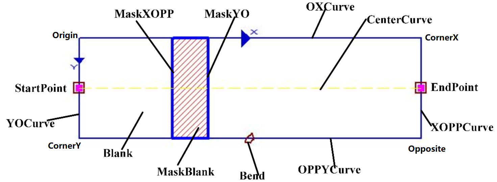
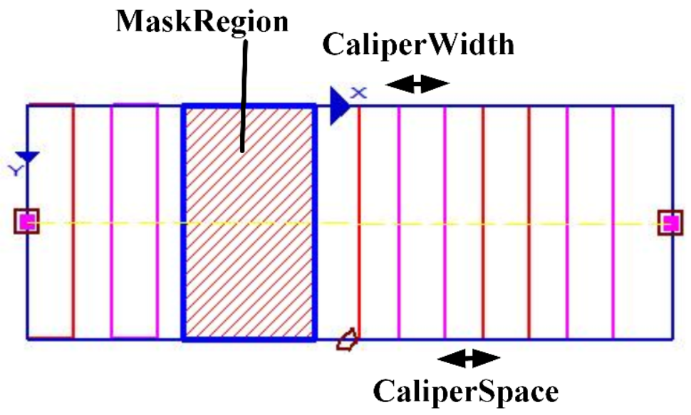
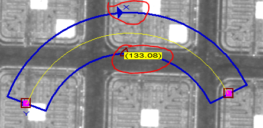
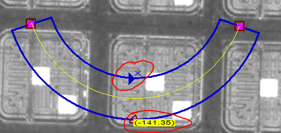
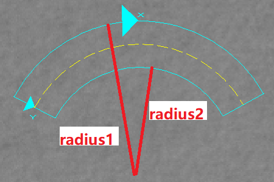
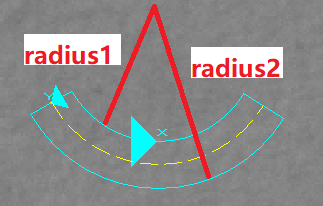

Biểu diễn vùng hình chữ nhật biến đổi (có thể là hình chữ nhật thẳng hoặc đoạn vòng cung có chiều rộng), đối tượng GUI tương ứng là scGuiRectEx. Thường dùng làm vùng tìm cạnh có độ rộng (line width region / annular width region) trong các công cụ đo biên như đo chiều rộng cạnh thẳng hoặc cạnh cong.


| Phân loại | Tên giao diện | Mô tả giao diện |
|---|---|---|
| Hàm tạo | scRectEx | scRectEx() – Hàm khởi tạo mặc định. |
| Hàm thành viên | GetOriginPoint | Lấy điểm gốc biến đổi Origin. |
| SetOriginPoint | Đặt điểm gốc biến đổi Origin. | |
| GetXLength | Lấy chiều dài theo hướng X. | |
| SetXLength | Đặt chiều dài theo hướng X. | |
| GetYLength | Lấy chiều dài theo hướng Y. | |
| SetYLength | Đặt chiều dài theo hướng Y. | |
| GetRotateAngle | Lấy góc xoay của vùng. | |
| SetRotateAngle | Đặt góc xoay của vùng. | |
| GetBendAngle | Lấy góc uốn cong (span angle). | |
| SetBendAngle | Đặt góc uốn cong. | |
| GetCenterRadiusStartSpan | Lấy đồng thời tâm, bán kính 1, bán kính 2, góc bắt đầu và góc uốn cong. | |
| GetAngleStart | Lấy góc bắt đầu của vùng biến đổi. | |
| SetCenterRadiusStartSpan | Đặt đồng thời tâm, bán kính 1, bán kính 2, góc bắt đầu và góc uốn cong. | |
| GetCircularArcs | Lấy hai đoạn cung tròn (annular arcs) của vùng biến đổi. | |
| GetCornerPx | Lấy vị trí góc X (CornerX). | |
| GetCornerPopp | Lấy vị trí góc đối diện (Opposite). | |
| GetCornerPy | Lấy vị trí góc Y (CornerY). | |
| GetCenterPoint | Lấy tâm của vùng biến đổi. | |
| GetMiddlePoint | Lấy các điểm giữa (trung điểm cung OX, trung điểm cung YOPP và tâm vùng). |
功能：构造scRectEx对象。
参数：无。
返回值：无。
功能：获取可变起始点Origin。
参数：无。
返回值：可变起始点坐标，sc2Vector类型。
功能：设置可变起始点Origin。
参数：
返回值：bool类型，表示是否设置成功。
功能：获取X方向长度。
参数：无。
返回值：X方向长度，浮点数类型。
功能：设置X方向长度。
参数：
返回值：bool类型，表示是否设置成功。
功能：获取Y方向长度。
参数：无。
返回值：Y方向长度，浮点数类型。
功能：设置Y方向长度。
参数：无。
返回值：bool类型，表示是否设置成功。
功能：获取旋转角度。
参数：无。
返回值：旋转角度，浮点数类型。
功能：设置旋转角度。
参数：
返回值：bool类型，表示是否设置成功。
功能：获取弯曲角度，参见图2，可通过弯曲角度和其角度确定终止角度。
参数：无。
返回值：弯曲角度，取值范围[-360, 360]，浮点数类型。
功能：设置弯曲角度，参见图2。
参数：
返回值：bool类型，表示是否设置成功。
功能：获取可变矩形的圆心、半径、起始角度和弯曲角度。
参数：
center：获取的圆心，sc2Vector类型。需要先创建一个sc2Vector类型的变量，然后传入该函数。
radius1：获取的半径，可变矩形OX圆弧段半径，输出，浮点数类型。需要先创建一个浮点数变量，然后传入该函数。该半径对应Origin和CornerX构成的边，从Gui图形上看，即标注了X的边，参见图2。
radius2：获取的半径，可变矩形YOPP圆弧段半径，输出，浮点数类型。需要先创建一个浮点数变量，然后传入该函数。该半径对应CornerY和Opposite构成的边，参见图2。
anglestart：获取的起始角度，输出，浮点数类型。需要先创建一个浮点数变量，然后传入该函数。
anglespan：获取的弯曲角度，输出，浮点数类型，可以为负值，参考图2所示，X方向如果为顺时针则弯曲角度为正，X方向如果逆时针则弯曲角度为负。需要先创建一个浮点数变量，然后传入该函数。
返回值：无。




图2 半径、弯曲角度
功能：获取可变矩形的起始角度。
参数：无。
返回值：可变矩形的起始角度，取值范围[0, 360]，浮点数类型。
功能：设置可变矩形的圆心、半径、起始角度和弯曲角度。
参数：
center：圆心，sc2Vector类型。
radius1：半径，可变矩形OX圆弧段半径，浮点数类型。该半径对应Origin和CornerX构成的边，从Gui图形上看，即标注了X的边，参见图2。
radius2：半径，可变矩形YOPP圆弧段半径，浮点数类型。该半径对应CornerY和Opposite构成的边，参见图2。
anglestart：起始角度，浮点数类型。
anglespan：弯曲角度，浮点数类型，可以为负值，参考图2所示，X方向如果为顺时针则弯曲角度为正，X方向如果逆时针则弯曲角度为负。
返回值：bool类型，表示是否设置成功。
功能：获取可变矩形的两个圆弧段。
参数：
circular_arc1：圆弧1，可变矩形OX圆弧段，输出，scCircularArc类型。需先创建一个scCircularArc类型变量，然后传入该函数。
circular_arc2：圆弧2，可变矩形YOPP圆弧段，输出，scCircularArc类型。需先创建一个scCircularArc类型变量，然后传入该函数。
返回值：无。
功能：获取可变矩形x角点位置，即CornerX。
参数：无。
返回值：可变矩形x角点位置，sc2Vector类型。
功能：获取可变矩形opp角点位置，即Opposite。
参数：无。
返回值：可变矩形opp角点位置，sc2Vector类型。
功能：获取可变矩形y角点位置，即CornerY。
参数：无。
返回值：可变矩形y角点位置，sc2Vector类型。
功能：获取可变矩形的中心点。
参数：无。
返回值：可变矩形的中心点，sc2Vector类型。
功能：获取可变矩形中点（OX/YOPP弧段中点、矩形中心点）。
参数：
m1：Origin和CornerX的中心点，输出，sc2Vector类型。需先创建一个sc2Vector类型变量，然后传入该函数。
m2：CornerY和Opposite的中心点，输出，sc2Vector类型。需先创建一个sc2Vector类型变量，然后传入该函数。
m3：矩形中心点，输出，sc2Vector类型。需先创建一个sc2Vector类型变量，然后传入该函数。
返回值：无。
无
无